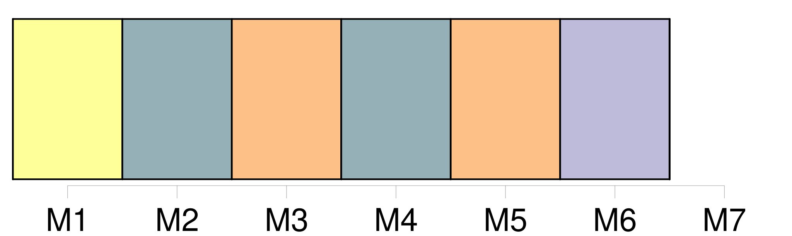

Longueur nb maillons : 6 mentions |
 |
En 1777, [le naturaliste allemand Johann Christian Erxleben] reprend cette première classification mais y [inclut] les travaux de Buffon en séparant les singes du Nouveau Monde. [Il] réduit le genre Simia aux seuls singes sans queue et [crée] quatre nouveaux genres pour le reste : Papio pour les babouins, Cercopithecus pour les guenons, Cebus pour les sapajous et Callithrix pour les sagouins. [Il] place en revanche l'unique espèce de tarsiers décrite par Buffon dans le genre Lemur ( Lemur tarsier ).
On notera qu'afin de rester en accord avec les récits antiques, [Erxleben] construit les noms des deux genres américains à partir de racines greco-latines : Cebus évoque les « cèbes » d'Aristote alors que Callithrix fait écho au « callitriche » de Pline. |
|
Il est possible de télécharger la ressource sur la page Ortolang |
Si vous avez des questions ou vous voyez des erreurs, merci d'envoyer un mail à silvia.federzoni89@gmail.com |